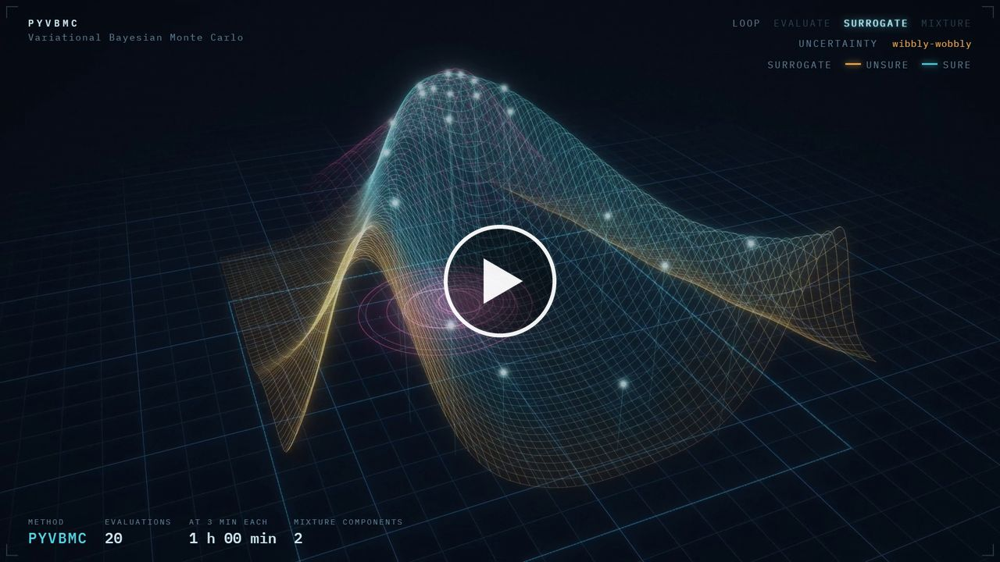
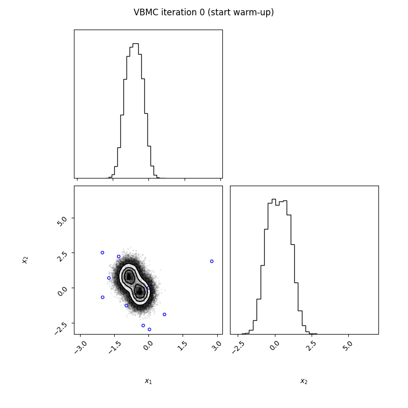

PyVBMC#
PyVBMC is one of the open-source tools for fitting models to data from the Machine and Human Intelligence Group at the University of Helsinki. Check out our other tools, such as PyBADS for point estimates and PyIBS for models that can only be simulated.
PyVBMC (Huggins et al., 2023) is a Python implementation of the Variational Bayesian Monte Carlo (VBMC) algorithm for posterior and model inference, previously implemented in MATLAB.
What is it?#
Can we perform Bayesian inference with expensive, black-box models?
VBMC is an approximate Bayesian inference method designed to fit computational models with a limited budget of potentially noisy likelihood evaluations, useful for computationally expensive models or for quick inference and model evaluation (Acerbi, 2018; 2020). PyVBMC works with black-box models in that it only needs to evaluate an unnormalized target log density (e.g., an unnormalized target log posterior).
PyVBMC simultaneously computes:
an approximate posterior distribution of the model parameters;
an approximation — technically, an approximate lower bound — of the log model evidence (also known as log marginal likelihood), a metric used for Bayesian model selection.

Watch a three-minute film that explains how PyVBMC works.#
What’s new in PyVBMC 1.5#
The main additions and changes in PyVBMC 1.5 are:
Faster, slightly more accurate inference and lower memory use, with numerical improvements and more compact run histories: on our benchmark suite a run takes on average 3.7 times less time than with PyVBMC 1.0.4 on noiseless targets and 2.2 times less on noisy ones, and the typical error of the estimates of the model evidence and of the posterior is about 10% smaller. Optional performance calibration tunes PyVBMC for your machine.
Corrections and safeguards, with corrections to the algorithm, most of them from a systematic comparison with the original MATLAB VBMC; a check that keeps the final boost from replacing a good posterior with a much worse one; and clear errors for option values that earlier versions ignored or misread.
Stacking Variational Bayesian Monte Carlo (S-VBMC) is included in PyVBMC to combine posteriors from independent runs (Silvestrin et al., 2025; usage).
Explicit random seed control for reproducing individual runs; see Reproducible runs.
Torch and JAX model integration through small user-written wrappers, with optional batch evaluation of the initial points; see Bring a torch or JAX model into PyVBMC.
Direct PyMC model support, with automatic setup and posterior samples exported under the model’s variable names; see Bring a PyMC model into PyVBMC.
Posterior exports to Torch and ArviZ for further analysis; see Use a fitted posterior downstream.
More practical guidance, with tips when a run starts, a PyVBMC FAQ, and a coding-agent skill that points agents to the relevant documentation.
The changelog lists what changed since PyVBMC 1.0.4, including the corrections that make results differ from earlier versions and what to check in an existing script.
Example run#
Tip
Watch a three-minute film that explains how PyVBMC works.
The figure below shows an example PyVBMC run on a “banana” target density. The corner plot shows the approximate posterior across iterations (contour plot and histograms of the marginals). The dots represent evaluations of the target density (hollow blue: previously sampled points, solid orange: points sampled in the current iteration). PyVBMC converges to an excellent approximation of the true posterior with a few dozen evaluations of the target density.


Extensive benchmarks on both artificial test problems and a large number of real model-fitting problems from computational and cognitive neuroscience show that VBMC generally — and often vastly — outperforms alternative methods for sample-efficient Bayesian inference. VBMC runs with virtually no tuning and it is very easy to set up for your problem.
Should I use PyVBMC?#
PyVBMC is effective when:
the model log-likelihood function is a black-box (e.g., the gradient is unavailable);
likelihood evaluations are moderately expensive (say, around 0.1 seconds or more) or noisy;
the model has up to
D = 10continuous parameters (maybe a few more, but no more thanD = 20);the target posterior density is continuous and reasonably smooth.
For a fast, noiseless likelihood, consider inference methods such as MCMC, available in probabilistic programming frameworks such as Stan or PyMC; PyMC users with an expensive supported model can pass it to PyVBMC through PyMCTarget.
Note: Our model-fitting tools include Bayesian Adaptive Direct Search in Python (PyBADS) for finding point estimates or better starting points for PyVBMC.
How-to#
Start with the Getting started and Examples, and consult the FAQ for practical advice on setting up and validating a run. The quickstart also covers reproducibility, vectorized targets, fitting PyMC models and exporting a fitted posterior to Torch or ArviZ. Optional performance calibration tunes PyVBMC for your machine. To combine the posteriors of several runs on the same model and data without further model evaluations, see S-VBMC (Silvestrin et al., 2025) and PyVBMC Example 7: Stacking the posteriors of several runs (S-VBMC). For an end-to-end Torch target, the equivalent JAX target wrapper, and posterior exports, see PyVBMC Example 9: Torch and JAX models and posterior exports.
- Installation
- Getting started
- PyVBMC: Frequently Asked Questions
- Examples
- PyVBMC Example 1: Basic usage
- PyVBMC Example 2: Understanding the inputs and the output trace
- PyVBMC Example 3: Output diagnostics and saving results
- PyVBMC Example 4: Multiple runs as validation
- PyVBMC Example 5: Prior distributions
- PyVBMC Example 6: Noisy log-likelihood evaluations
- PyVBMC Example 7: Stacking the posteriors of several runs (S-VBMC)
- PyVBMC Example 8: Fitting a PyMC model
- PyVBMC Example 9: Torch and JAX models and posterior exports
- Documentation
For coding agents, the PyVBMC skill
points to the documentation relevant to each task. Give your agent that
file, or copy the skills/pyvbmc folder into its skill directory.
Contributing#
References#
Huggins, B., Li, C., Tobaben, M., Aarnos, M., & Acerbi, L. (2023). PyVBMC: Efficient Bayesian inference in Python. Journal of Open Source Software 8(86), 5428, https://doi.org/10.21105/joss.05428.
Acerbi, L. (2018). Variational Bayesian Monte Carlo. In Advances in Neural Information Processing Systems 31: 8222-8232. (paper + supplement on arXiv, NeurIPS Proceedings)
Acerbi, L. (2020). Variational Bayesian Monte Carlo with Noisy Likelihoods. In Advances in Neural Information Processing Systems 33: 8211-8222 (paper + supplement on arXiv, NeurIPS Proceedings).
Silvestrin, F., Li, C., & Acerbi, L. (2025). Stacking Variational Bayesian Monte Carlo. Transactions on Machine Learning Research. (paper + supplement on arXiv, TMLR)
Please cite the first three references when using PyVBMC, and also Silvestrin et al. (2025) when using S-VBMC.
You can cite PyVBMC in your work with something along the lines of
We estimated approximate posterior distributions and approximate lower bounds to the model evidence of our models using Variational Bayesian Monte Carlo (VBMC; Acerbi, 2018, 2020) via the PyVBMC software (Huggins et al., 2023). PyVBMC combines variational inference and active-sampling Bayesian quadrature to perform approximate Bayesian inference in a sample-efficient manner.
If you use S-VBMC, please also add a sentence such as:
We combined posteriors from independent PyVBMC runs on the same model and dataset using S-VBMC (Silvestrin et al., 2025).
BibTeX#
@article{huggins2023pyvbmc,
title = {PyVBMC: Efficient Bayesian inference in Python},
author = {Bobby Huggins and Chengkun Li and Marlon Tobaben and Mikko J. Aarnos and Luigi Acerbi},
publisher = {The Open Journal},
journal = {Journal of Open Source Software},
url = {https://doi.org/10.21105/joss.05428},
doi = {10.21105/joss.05428},
year = {2023},
volume = {8},
number = {86},
pages = {5428}
}
@article{acerbi2018variational,
title={{V}ariational {B}ayesian {M}onte {C}arlo},
author={Acerbi, Luigi},
journal={Advances in Neural Information Processing Systems},
volume={31},
pages={8222--8232},
year={2018}
}
@article{acerbi2020variational,
title={{V}ariational {B}ayesian {M}onte {C}arlo with noisy likelihoods},
author={Acerbi, Luigi},
journal={Advances in Neural Information Processing Systems},
volume={33},
pages={8211--8222},
year={2020}
}
@article{silvestrin2025stacking,
title={Stacking {V}ariational {B}ayesian {M}onte {C}arlo},
author={Silvestrin, Francesco and Li, Chengkun and Acerbi, Luigi},
journal={Transactions on Machine Learning Research},
year={2025},
url={https://openreview.net/forum?id=M2ilYAJdPe}
}
@article{acerbi2019exploration,
title={An Exploration of Acquisition and Mean Functions in {V}ariational {B}ayesian {M}onte {C}arlo},
author={Acerbi, Luigi},
journal={PMLR},
volume={96},
pages={1--10},
year={2019}
}
License and source#
PyVBMC is released under the terms of the BSD 3-Clause License. The Python source code is on GitHub.
Acknowledgments:#
PyVBMC was developed by members (past and current) of the Machine and Human Intelligence Group at the University of Helsinki and ELLIS Institute Finland. Work on the PyVBMC package is supported by the Research Council of Finland (grants 356498 and 358980 to Luigi Acerbi) and its Flagship programme: Finnish Center for Artificial Intelligence FCAI.
Development of PyVBMC 1.5 was assisted by coding agents, including Anthropic’s Claude Fable 5.1 and OpenAI’s GPT-6 Astra.